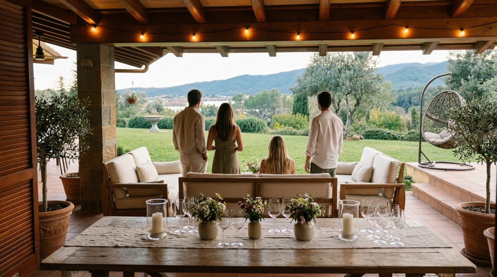
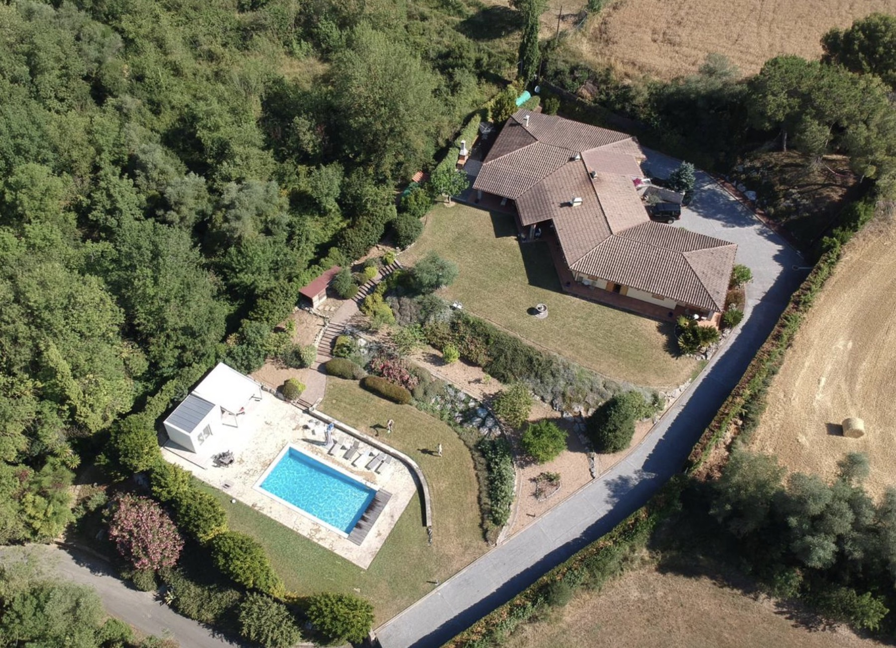
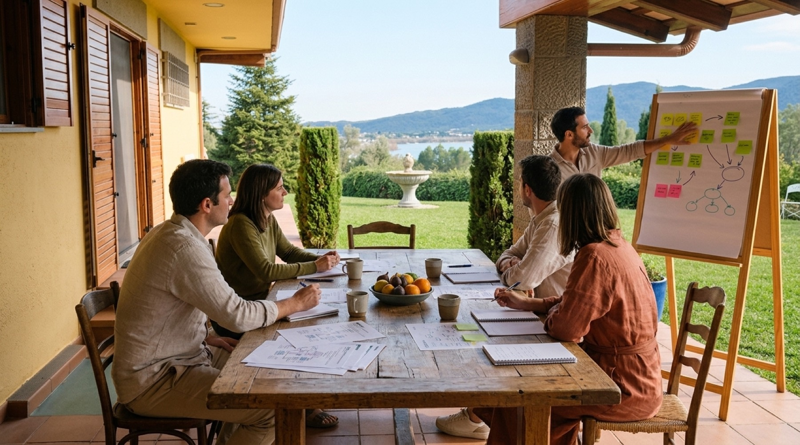

The problems you don’t put in the board deck. Say them here first.
Cadence is a private place for you and your co-founder. You say what is really going on. We bring someone who has solved it before. Your investor never reads a word.
You carry more than anyone sees.
- The hire that isn’t working, and nobody has said it yet.
- The runway conversation you keep moving to next week.
- The decision you heard about after it was made.
- The feeling that the two of you are building slightly different companies.
None of this is a crisis. It is what building a company looks like. It only gets bigger when nobody looks at it.
of founders turn to their co-founder when it gets hard.
Startup Snapshot, 400+ founders, 2023
turn to their investors.
Startup Snapshot, 400+ founders, 2023
of VC-backed founding teams lose a co-founder within three years.
Carta, 22,352 founders, 2025
So the person you lean on most is also the relationship most worth looking after.
Cadence is the neutral place in between.
We are not your investor, and we don’t report to them. You can say here what you wouldn’t say in a board meeting, and sometimes what you haven’t yet said to each other. Then we help you do something about it.
How it works, in three steps.
You each do a private Check.
Fifteen minutes with our AI interviewer, alone. You see straight away what is hardest for you right now, in your own words. Then you get a free conversation with a person, and you leave with one step for this week.
If one problem is worth it, you do a Sprint.
A few weeks on that one problem, with one goal and one number, and someone who has solved it before.

Not just coaching. One system.
Cadence Intelligence
asks the questions, remembers what you said, and gives you a five-minute check-in each week and short exercises between sessions, so the work keeps moving.
Founder coaches
work with the two of you: how you decide, who does what, where you want to go.
The Shadow Leaders network
brings about 80 senior experts for the company itself: a fractional CFO for your runway, a sales lead for your first sales hire, a hiring lead for your senior team.
The system finds the problem.The people help you solve it.You see what moved.
What you get
Clarity.
You know what is really holding you back, and whether your co-founder sees it the same way.
Help that fits.
One person, matched to your problem, who has been where you are.
Progress you can see.
One number, measured at the start and at the end.

The Cadence weekend
Three days at the lake. Just the two of you, and a few founders who get it.
Once a year, four founding pairs come to a private lakehouse on Lake Banyoles, an hour and a half from Barcelona. No investors. No slides. No phones on the table.


You work on the questions you never have time for. Where do we want this company to be in three years? Who decides what? What do we each need from the other? The agenda is built from your own Check, so you work on your real questions, with a coach and with experts who have built companies themselves.

And in between, you breathe. You row on the lake at sunrise with an Olympic rowing coach, and feel what it is to move in one rhythm. You have dinner at a starred restaurant in Girona. You hike, you swim, you sit on the veranda with people who know what your weeks look like.


You go home with one shared plan for the next twelve months, and with three other founding pairs you can call.
Four pairs.Three days.One plan.
What it takes
A few hours, spread over months.
- 15minutesThe Check
- 30minutesThe conversation
- 6hoursA Sprint
Six hours with your coach or expert, five minutes a week.
You can start alone. Your co-founder joins when they are ready.
Your answers are yours
- Your fund
sees only counts across five teams or more. Never your name or your words.
- Your co-founder
sees what you both agree to share, side by side. Never your words.
- Your coach
reads your notes only with your yes.
- You
can download or delete everything, at any time.
Our AI asks and listens. It never scores you or labels you. Every judgement comes from a person.
Free to start
The Check and the conversation cost you nothing. When your fund works with Cadence, it supports the Sprints. If your fund isn’t with us yet, start anyway.
Why this exists
“For years my co-founder and I drifted, slowly, without saying it. Most of it could have been talked about much earlier. I built the place I wish we’d had.”
Rodin Affourtit, seven years co-founder and co-CEO of a VC-backed company, founder of Cadence